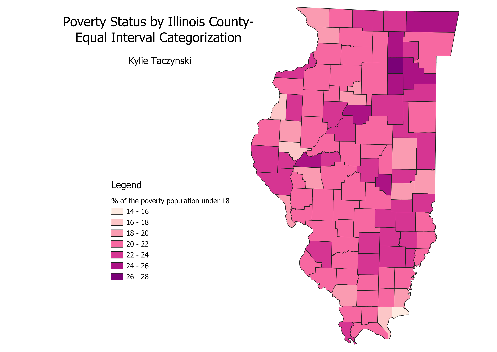
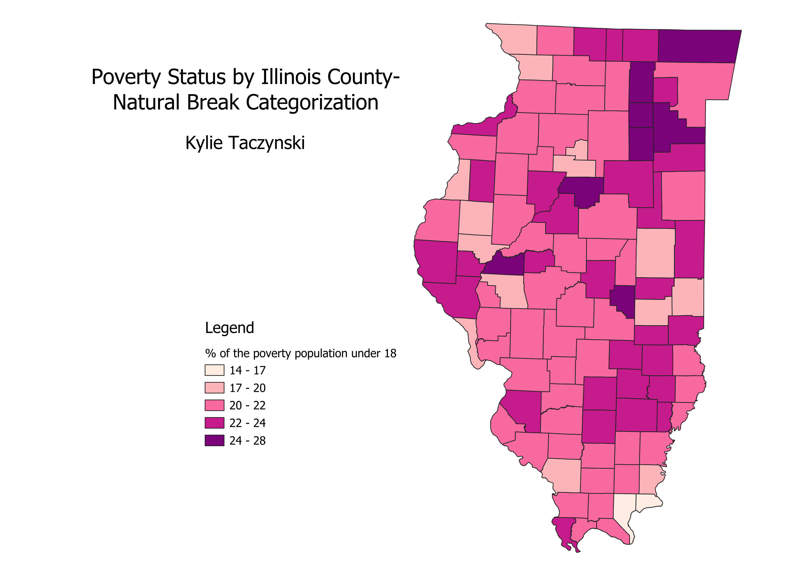

Homework 6 Part 2
Ratio Explanation
The ratio I created involves taking the count of individuals below the age of 18 with poverty status within each county and dividing it by the total count of individuals with poverty status within each IL county. Afterward, I multiplied the results by 100 to express the values as a percentage. In simpler terms, this ratio reveals the percentage of the population with poverty status that is under the age of 18.
IL Equal Count Map
Pros: Cons:

IL Equal Interval Map
Pros: Cons:

IL Natural Breaks Map
Pros: all the classes are represented on the map, it is easy to distinguish between the different interval groups Cons:the intervals are slightly strange and confusing which could make it difficult for someone to understand the breaks
